Why it looks and works this way.
On 23 Oct the Seer team asked entrants to use the extra time on its direction as an Information Finance protocol: a two-sided marketplace, the App as Seer’s Etherscan, and a visitor who can tell who is asking, what is priced and how to use the signal. Each section below takes one of those asks, says what we decided, why, and where the decision lives on the site.
A two-sided marketplace
“Seer is a two-sided marketplace for information seekers who need answers to help them make decisions and traders who put capital behind forecasts for a potential profit.”
Seer, 23 Oct 2026 · x.com/seer_pm
- Two paths, side by side.
The hub and the homepage open with “Two sides of every market”: the seeker asks, a market prices it, the seeker reads and uses the signal; the trader finds markets, understands the price, trades on Seer. One market sits between the two columns, drawn as one line in, many priced answers out. Hub · Homepage
- Every link goes somewhere real.
“Ask a question” opens Seer’s own create flow (app.seer.pm/create-market); “Understand the price” opens a live market’s detail in the explorer; “Trade” opens that market on app.seer.pm.
- One switch in the explorer.
“For information seekers” leads every card and table row with what the market says, in a sentence, and how much liquidity backs it. “For traders” leads with prices, volume, open interest and dates. Same data, read two ways. Seekers’ view · Traders’ view
- Both sides in every market’s detail.
“What this tells you / How to use it” sits beside “Price, liquidity and dates / Trade on Seer”, so neither reader has to wade through the other’s panel.
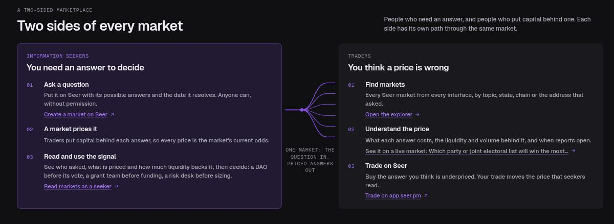
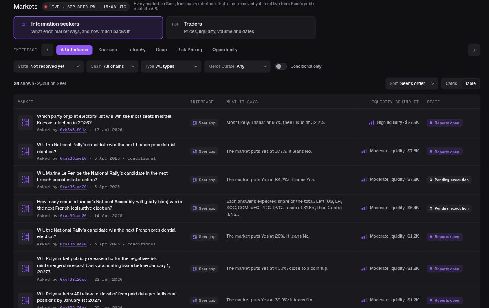
Why. Seer’s brief asks that someone can understand why a market exists and what they can learn from it “without first becoming a trader”. A trader, on the other hand, wants the price and the liquidity behind it at a glance. Putting the two readings side by side, instead of mixing them into one card, serves both without dumbing down either.
The App as Seer’s Etherscan
“The Seer app should be Seer’s equivalent of Etherscan: a general explorer for all Seer markets (across the different interfaces), where people can discover, understand, and trade across different market types.”
Seer, 23 Oct 2026
- All markets, all interfaces.
The explorer reads Seer’s public markets API live, the same request Seer’s app makes. Its default list is every market not resolved yet, of every type, futarchy markets included. An Interface facet and column say which Seer app a market belongs to: Seer app, Futarchy, Deep, Risk Pricing or Opportunity. Deep’s markets · Futarchy’s
- Discover, understand, trade.
A market’s title opens its detail: who is asking and what else they ask, what it prices, how to use the signal, then the on-chain record. “Trade on Seer” is the way out; this concept places no orders. Open a real market’s detail
- Etherscan habits.
In a market’s detail every address links to its chain’s block explorer; the condition ID, the Reality.eth question and the collateral token can be copied; every detail has its own link (?market=<chain>:<address>) to share; an asker’s address opens all of their markets. A conditional market links to its parent.
- Filters are Seer’s own fields.
State, chain, Kleros Curate, conditional only, search and sort are fields of Seer’s API, so a filtered list is exactly what Seer holds, with its count. Only the market type is filtered on the loaded page, and the explorer says so.
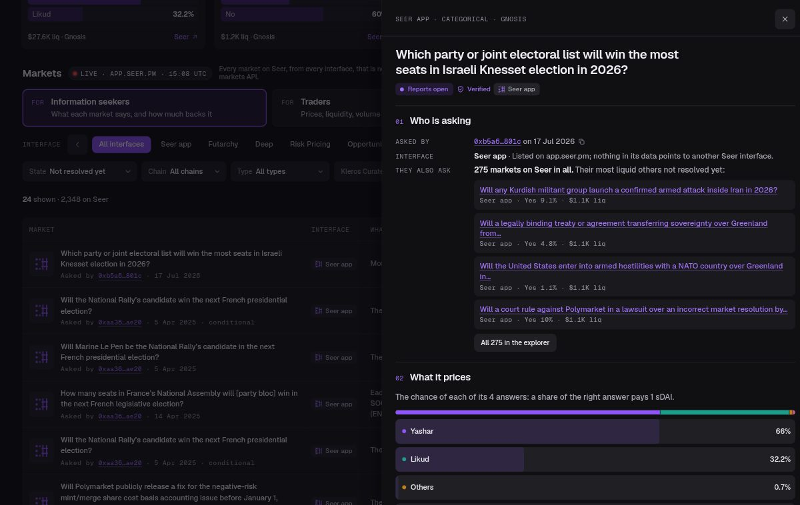
| Interface | Shown when | Read from |
|---|---|---|
| Risk Pricing | risk.seer.pm’s own API lists the market as one of its boards | risk.seer.pm’s market list, refreshed hourly |
| Opportunity | it is one of the three linked markets behind opportunity.seer.pm’s AI job board name, or the settled Rebrand Contest market | opportunity.seer.pm and its archive |
| Futarchy | the market is Seer’s futarchy type, the one futarchy.seer.pm’s proposals use | the market’s own type field |
| Deep | it was asked by 0x00dc…36e0, the creator of deep.seer.pm’s Round 3 markets, and the question names the Deep Funding experiment | the creator and the question text |
| Seer app | it is listed on app.seer.pm and nothing in its data points to another interface | Seer’s markets API |
| Not identified | its data has no valid creator to match, so we don’t guess | — |
Honest limits. Read on 23 Oct at 15:00 UTC, the not-yet-resolved lists held 201 Deep markets, 345 futarchy markets, 1 Risk Pricing board and 3 Opportunity markets. Seer’s markets API carries no prices for futarchy markets, so the explorer says “no price” there instead of drawing one; the Futarchy page reads its prices from futarchy.seer.pm’s own API. Deep’s markets have no price in that API either: for the 98 markets in deep.seer.pm’s own Round 3 feed, the explorer shows that feed’s price (hourly snapshot) and says where it comes from; an earlier set of Round 3 markets with no price anywhere we can read says “No price yet”. The liquidity levels a seeker sees (under $1K low, $1K to $10K moderate, above that high) are our reading rule, said as one on the page, not Seer’s.
Who is asking, what it prices, how to use it
“A visitor should be able to understand who is asking a question, what the market is pricing, and how to use that signal. We want to see this reflected in the structure and user experience of the designs.”
Seer, 23 Oct 2026
- One block, six heroes.
Every interface opens on a real Seer market with the same three rows, “Asked by · Prices · Use the signal”, in the same place and the same phone layout. A visitor learns the pattern once.
- Only what the data shows.
“Asked by” names an organisation only where the market itself does: the Deep Funding experiment (named in all 98 questions), Seer’s AI job board, risk.seer.pm, the EIP-8363 inclusion call. Elsewhere it is the creator’s address, linked to its block explorer, with how many other markets it has asked.
- The explorer’s detail is built on the same three.
Numbered 01 to 03: who is asking (address, interface and the evidence for it, their other markets), what it prices (each answer and its price, in the market’s own unit), how to use the signal (a plain reading, the liquidity behind it, where the market is in its life).
- “How to use it” carries the caveats.
A thin market is a rough lean; a market with no trades still shows the price its liquidity started at; before reports open, the price is the only answer; in arbitration, it waits for Kleros. Prices are forecasts, and the page says when it read them.
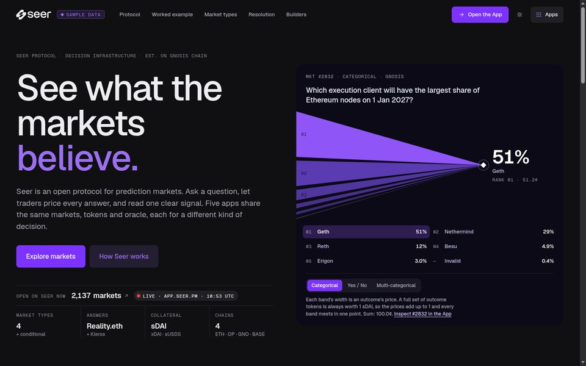
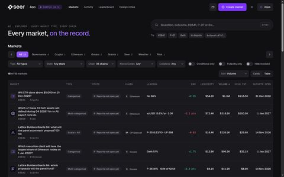
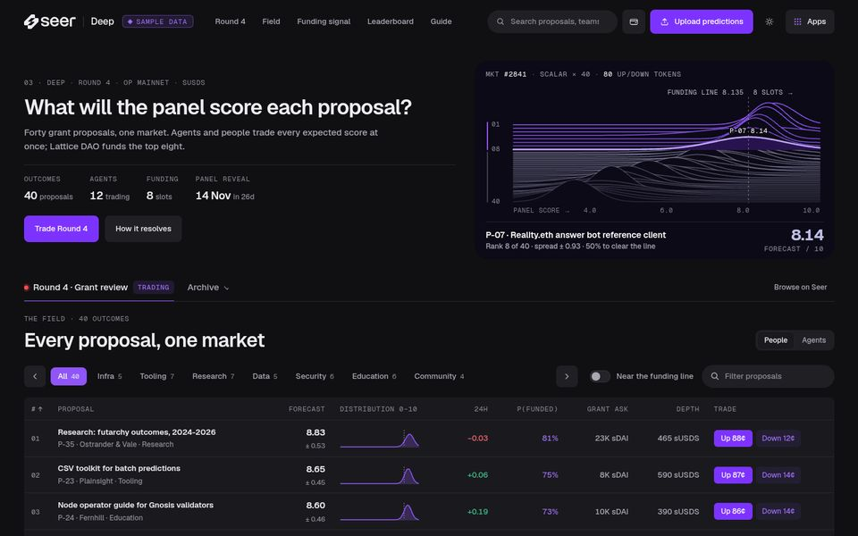
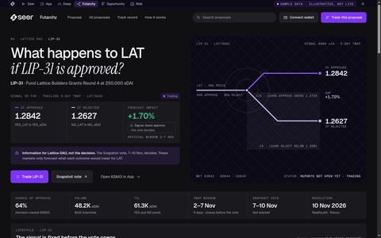
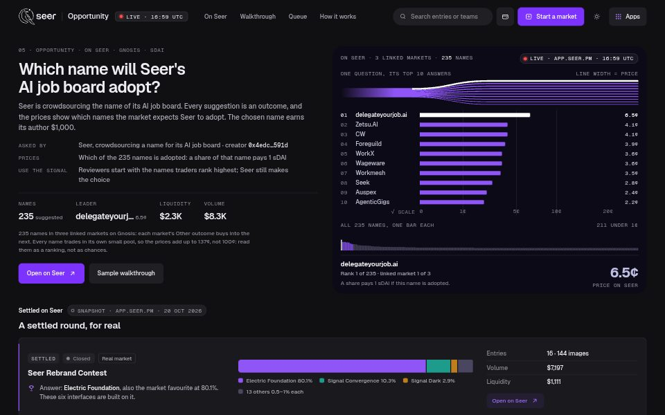
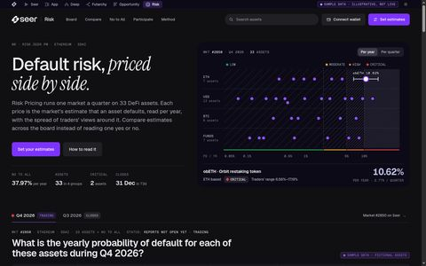
Information Finance, and the line
“Use the extra time to consider the direction we’re going in as an Information Finance protocol.”
Seer, 23 Oct 2026; the Part II article, 17 Oct 2026
- The headline is the mechanism.
“One question in. Every answer priced.” on the hub, “Questions in. Priced answers out.” on the homepage. Each app says who learns what from it: a DAO before its vote, a funding team before the scores are in, reviewers deciding what to read first, a risk desk comparing protocols.
- The line runs the way the Part II brief asks.
The kit’s lines converged from many into one point. Seer asked for the reverse, so every line motif here enters as one line from the left and fans out to the right. Where the motif is a chart, the fan carries data: band width is an answer’s price (homepage), 98 branches are 98 repositories (Deep), the fork at “now” is a futarchy decision.
- For agents, too.
Seer describes itself as infrastructure for the agentic economy. Each interface has a JSON twin with source and fetch time (data/), and llms.txt lists every Seer endpoint read.
The Electric Foundation identity, logo included
“Also remember that the Electric Foundation’s identity is the starting point, but there is room to rethink the experience. We’re leaving those design decisions to you.”
Seer, 23 Oct 2026
Fog on ink · headers, dark theme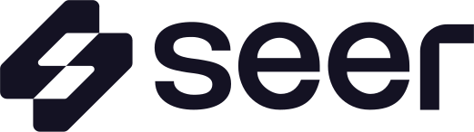
Ink on fog · light theme
Mark on violet · favicon, postersKept from the kit
- The logo, unchanged. The S mark and the lowercase “seer” wordmark come from the designer’s own vector files, path data untouched, recoloured only. They sit in every header as one lockup beside each product’s name (Seer · App, Seer · Deep…).
- The UI tokens: page #101013, card #1A1A1E, nested #1F1F24, primary #7D33FF, active chip #8F55F7, and their light counterparts.
- The geometry: radius 9 for cards, 22 for panels, 8 for controls; 12px card padding; the 40px gutter.
- The type spec: Medium 13 for UI, Bold 16/24 for market titles, Bold 32 for amounts, a mono for spec labels. PP Neue Montreal and Suisse Int’l Mono are used when installed; Geist and Geist Mono stand in otherwise.
- The components: pill search, the category row, Yes/No outcome rows, Up/Down buttons, the bet slip.
- The graphic language: the violet line field, stacked waves, the dot grid, 45° construction lines, data bars, mono spec labels.
Rethought, and why
- Line direction, reversed, because the Part II brief asks for one → many.
- Motifs carry data instead of decorating: a band’s width is a price, a branch is a repository, a fork is a decision.
- One sans. The kit’s accent serif was a trial font in the file, and dense data screens read better in one family; accent words are violet instead.
- Contrast lifted so 12px labels pass WCAG AA (muted #67676F to #8A8A94 in dark mode).
- Semantic colour, sparingly. The kit has none; we add green, amber and red only for price moves and risk bands, always beside a sign or a label.
- Prices in their market’s unit: a chance for categorical markets, a share of the payout when several answers can win, an expected value for a scalar range.
- The experience around the kit: two readings of every market, an Interface column, a detail built on the three questions, one Apps menu across six products.
Why the Electric Foundation logo, and not the raven. We use the Electric Foundation mark on purpose. Seer named this identity the recognisable starting point, and a swapped or redrawn mark is the first thing that would break recognition. The mark is also built on the same 45° construction as the kit’s line language, so one geometry runs from the logo to the data motifs. The raven is Seer’s current mark, and the Part II banner pairs it with an italic SEER wordmark; mixing two marks across six products would split the identity, so we kept one. Should the team keep the raven, the logo is drawn in a single place (Seer.logo in assets/shell.js), so the swap is one file.
Refined after the Oct 23 extension
What changed on the live site after Seer’s 23 Oct post. The on-chain claim still points here; earlier changes (live Seer data on every first screen, the line direction, the three-question block) are dated on the hub.
- Two sides of every market on the hub and the homepage: the information seeker’s path beside the trader’s, linked to Seer’s create flow, the explorer and app.seer.pm.
- The explorer reads both ways: a “For information seekers / For traders” switch changes what every card and table row leads with.
- An Interface facet and column across Seer app, Futarchy, Deep, Risk Pricing and Opportunity, decided only from each market’s own fields (“Not identified” otherwise); the default list now includes futarchy markets.
- A detail for every real market: who is asking (address, block explorer, their other markets), what it prices, how to use the signal, the seekers’ and traders’ panels, the on-chain record, a link to share, and Trade on Seer.
- “On Seer now” titles open the same detail; its “Seer” link trades.
- This rationale, linked from the hub, every page’s design notes and the footer.
Real and sample. Every first screen, the explorer and every market detail read Seer’s public APIs live, with a dated hourly snapshot as the fallback, labelled. The walkthrough under each first screen (Lattice DAO, proposal P-07, market #2841) is made up to show the full design and is labelled as sample data; its addresses all start with 0x5eed. Concept by Swift Bot Labs, not affiliated with Seer.